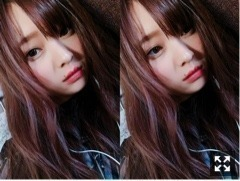
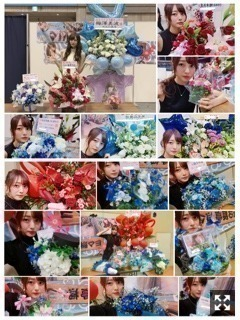
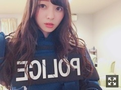
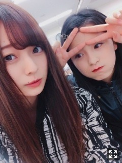

姫〜。梅澤美波
みなさまこんにちは！！
乃木坂46 ３期生の
梅澤美波です！！

ふてくされマン。（笑）
いつもとちがうめいくー！
毎年イルミネーションが好きで
ちょっとしたのでもテンション上がる人で
毎年どこかしら見に行ってたけど
去年いけなくて悔しかったので
今年はどこ行こうか計画中☺︎
最近は稽古終わりに
かえでと牛タン食べに行ったよ〜幸せだったなあ〜１６枚食べた！タンは厚い派！
あとはこちらも稽古終わりにたまみとお買い物行った！２人ともなぜかハイテンションで訳分からぬことで笑いまくってた（笑）
あとはこちらも稽古終わりにももことかえでとたまみとご飯食べいったり！
稽古ももう終わり本番期間に入ります、早いなああっという間だなあ
ありがとうございました☺︎
やっぱりものすごく楽しくって
３期生のオリジナル曲３曲全て披露させていただけて
本当に楽しくてリハから楽しい楽しいずっと言ってた( ˙-˙ )౨
ステージってキラキラしてて素敵だ〜！
サイリウムはボードやうちわありがとう☺︎
しっかり見えたぜ〜
２４日横浜、３０日名古屋
個握ありがとうございました！！

半分から上が横浜、
半分から下が名古屋！
見にくくてごめんね(；＿；)
ブレてしまってるのもある、、申し訳ない(；＿；)許してくれ〜
どっちも偶然ポニーテール（笑）
たくさんのお花たちをありがとう〜かわいい、( .. )幸せです、いつも匂いを嗅いじゃう( ¨̮ )
もう次来るのが来年って方が多くて
早めの良いお年を〜って沢山言った気がする( ˙-˙ )౨
今年ももうあと３ヶ月、、早いなあ
前回が３部制、今回が４部制で
とても楽しくやらせていただいてます！
服装は全部チェンジしたりして楽しんでる☺︎（笑）
握手会だといつもぽくない服も着られて楽しいんだ〜
頑張れ！の言葉、すごく響きました！
今だからこそ！
笑わせてくれたり、ありがとう！
笑顔になれますいつも！ありがとう！
５部の握手の後半の寂しさって凄いんだよ！
あ、終わっちゃう！って思う
悲しいなあって思う！
それぐらい楽しい！握手会！すき！ありがとう！
毎週あった握手会も、
次は２８日の横浜！寂しいね〜
ハロウィン仕様なのでお楽しみにね〜
失恋お掃除人！MV！
見てくださいましたか？
もう本当にすき！だいすき！
この曲を頂けて歌えて幸せ！
ダンスも面白かっこいいでしょ！
MVの監督さんはお馴染みの伊藤衆人監督！
初めましてだったのだけど
本当に面白くて良い方で撮影中は常に笑顔が溢れる現場！☺︎
最高に楽しかった！
完成を見てニヤニヤが止まらなかった！
時間をかけて撮影をして、たくさん準備をしてくださって、こんなに素敵なMVになってる、、感動でいっぱいでした、ありがたいです。( .. )

４人で写真撮るの忘れるという大失態、、
若月さんがね、MV撮影の日現場入りしたら３人それぞれにメッセージ付きの飲み物を下さったの。(なんて書いてあったかは教えませーん☺︎（笑）
なんて素敵な方なんだろう、、と(；＿；)
緊張も一気になくなった、リラックスできました、本当に素敵な方だなあと会うたび会うたび感じます。
たくさん聴いてね〜( ˙-˙ )౨
そして本日公開３期生曲『僕の衝動』MV！
今まで頂いてきた曲とは一風変わった曲！
かっこよさ全開です！
ダンスも曲もとても好き！
そしてりりあがセンター！
おめでとう！！
私は３期生で頂いたオリジナル曲では
全列経験したことになります！
３期生で唯一です！
１番最初にポジションを頂いたお見立て会で披露させて頂いた曲、３期生のオリジナル曲、
どれも全て端っこからのスタートでした、
どういう意味で私はあの場所にいたのか
あの場所に置いていただいたのか
たくさんたくさん考えて
あの場所でも構わず全力でパフォーマンスする毎日でした。
『未来の答え』でのフロント
とても嬉しいと思いました、頑張って良かったって思えた一つの瞬間でした、
でも、ここで浮かれたら終わりだなって思いました、一回きりでは意味がない
でも、背が高くたってフロントに立てるんだ！とたくさん勇気を貰った曲。☺︎
ファンの方にもたくさんおめでとうを貰いました、本当に嬉しかった！
少しずつだけどちょっとした恩返しを出来てるかなって。☺︎
色々な景色を見られて、
色々な景色を味わえて、
今は勉強する時なんだなと感じています！
色々な場所からたくさんのことを吸収して
皆様に認めてもらえるよう頑張ります。
どこの場所にいても
いろんな気持ちになったし
全部の気持ちが分かる、全部の気持ちが大切だった。☺︎
何も出来ないもどかしさとか
自分に対しての悔しさとか不甲斐なさとか
行き場のない思いとか
そんなんはしょっちゅうありますが
今は与えていただいたことしかできない
今はまだ自分から発信する力とかはないから
誰がどうとかでなく、自分の中でどこにいても自分が輝けたらいいなって思う！
今はこの身長も少しずつ好きになれています！
また皆様と素敵な景色が見られるように！
いつもありがと☺︎早く会いたいぜ〜
ここに誇りを持って活動します！
皆様、19枚目シングルも３期生をどうぞよろしくお願い致します！
質問コーナー◉
Q.好きな香りは？
A.場の雰囲気に合っていれば◎香水とかだとキツすぎない匂いがすきです、☺︎特にこれといった決まった好きな匂いみたいのはないけど、香水屋さん行ってこれ好き！ってピンとくるみたいなことが多い！
Q.やる気がなくなった時どうする？
白石さん秋元さんのユニット、
まあいいか？
かわいいが詰まりすぎてて心がキュンとしました、、
告知◎
〜出演〜
▽１０／６～１０／１５ 舞台『見殺し姫』
(８．９除く)
明日から！
▽１０／８．９ 全国ツアー@新潟
▽１０／２２ ｢めざましテレビ PRESENTS T-SPOOK ～TOKYO HALLOWEEN PARTY～｣
３期生が出演させていただきます！
▽１１／１９ ｢AGESTOCK2017｣
ゲストステージに３期生が出演させていただきます！どんなステージになるのか楽しみ！
よろしくお願い致します☺︎
明日から３期生の舞台、『見殺し姫』です。
人よりできないことが多いし劣っている部分も多い、最低限のことは自分で理解しているつもりです。
たくさん悔しいと思ったし
たくさん不甲斐ない思いもしたし
留めておく気持ちの方が大きかったのがここまでの正直な感想だけど、
舞台を成功させたいという気持ちのみ！
３期生１２人で舞台で演技するなんて、
プリンシパルをやっていたあの時の私が１番やりたかったことなんです、
どんなに上手くいかなくて悔しくても
その頃の気持ちを考えればへっちゃらだった。☺︎
３期生は今までも今も、有難いことに１２人で活動をさせていだくことが多いです、
でも、それを当たり前と思って慣れが出てきてしまうのが１番私は嫌でした
長くはない稽古期間で
監督の松村さん初め、かとうさん、藤木さん、アンサンブルの御三方、スタッフさん、この舞台に関わってくださっているたくさんの方にご迷惑を掛けてしまうことが多かったかと思います。
私たちより、たくさん動いてくださっていて
長い時間動いてくださっていて
私たちが稽古をしやすい、演技をしやすい場を、環境を作ってくださいました。
そんな方達に心から恩返しがしたいと思っています。
素敵な舞台で私たちが素敵な演技をしてお客様に何か伝えられたならそれは一つの恩返しかと！
１２人みんな同じ気持ちだといいなあ
３度目のアイアシアターです
当たり前じゃない！
あの景色がすき！
お客様と近くにいられるアイアシアターがすき！
私は楽しめています！ものすごく！
アイアシアターに久しぶりに帰ってきた時もわくわくが止まらなかった！
物凄い緊張しいなのでとても緊張していますが、今は楽しみがすごくおっきい！
こう思えてることへも不思議に感じる！
口だけの人にはなりたくないなって
場によって頑張り方を変える人にはなりたくないなって
だって格好悪いもん( ˙-˙ )౨（笑）
理想の人物像があるから、私はそんな人になれるように行動するのみ！
稽古の毎日の中で、週末にある握手会でたくさん救われた！
楽しみにしてくれてる人が沢山いるってことが一番のパワーだった！
ありがとう！
たのしみ！わくわくしてる！プリンシパルのリベンジ！全部ぶつけてきます！
いろんな景色が見たい！
いつでも落ち着いていられる人でいたい！
来られる方、お楽しみに！
(楽屋はプリンシパルと同様ももこと隣です〜梅桃☺︎私のメイク道具をあさってきたり私がメイクをしてるとねえももこもそれやって〜と言ってくる相変わらずのももこです☺︎見殺し姫期間も楽しくなりそう☺︎（笑）

昨日の梅桃です、力を合わせてがんばるぞー！
１９枚目の握手も、会いに来てくれる方本当にありがとうございます。
力を借りてばかり、ありがとう
楽しい握手会にしてやるぜ！
待ってろ！
（笑）
会えるだけで嬉しい！
１枚１枚大切にしたい！
楽しみにしてるね。☺︎
髪が物凄く長いんだー！
さあ今日は夢で逢えるかな〜（笑）
おやすみ( ˙-˙ )౨
今が踏ん張り時というか、今が頑張り時だなって感じている！
いや、いつもだけどもっともっと、まだ足りないんだなって、力を借りてばかりでごめんね〜
留めておくのも大切、我慢も大切かなって、
恩返しできるように頑張るからさ、みんながんばろな〜
Original：https://www.nogizaka46.com/s/n46/diary/detail/41306?ima=0520&cd=MEMBER